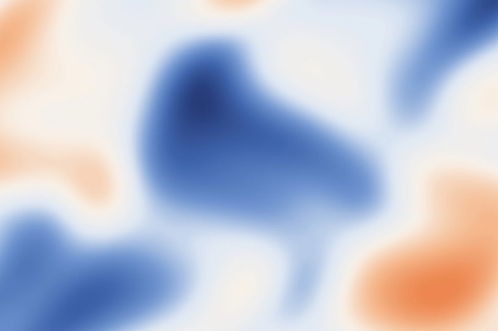
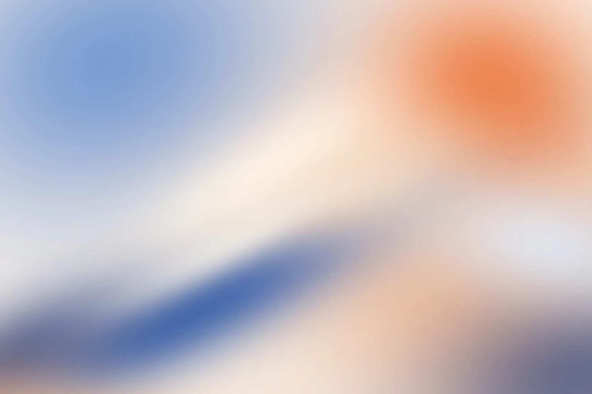

GenAI Mesh Gradient / Agent skill
Turn a visual brief into editable gradient artwork.
A research-informed workflow for controllable visual generation. An AI agent translates purpose, palette, composition and feedback into a recipe, then uses Figma or SVG tools to build and refine the result.
中文提示：把用途、配色、构图和修改要求写成配方，再生成和调整可编辑渐变图。英文说明为主，中文提示帮助快速理解。
Six existing native Figma studies share a blue–apricot palette at 1536×1024. This guide includes construction details, a controlled Sky blur comparison, palette controls and recomposed layouts.
Research connection
From generative UI ideas to a reusable workflow.
A brief such as “make it softer and leave room for a title” needs to become a protected text area, color roles, region positions, opacity and edge softness. This skill makes those decisions explicit so an AI agent can render, inspect and revise the result.
Generative UI research explores how generation responds to user input, design rules and feedback. The connections below apply those ideas at the workflow level.
| Research idea | Workflow application | Implementation |
|---|---|---|
| User input as a condition | Specify purpose, palette, reference structure, dimensions and editability. | Recipe and route selection |
| Design constraints | Protect text areas and control color roles, composition and scale. | Art direction · Figma recipes |
| Feedback and refinement | Inspect the output and change a relevant parameter; hold composition fixed when comparing colors. | Palette controls · Refinement workflow |
| Usable, editable output | Keep color and masks separate and return node IDs for later edits. | Native helper · Study builder |
Related papers and implementation scope
- Automated UI Interface Generation via Diffusion Models: Enhancing Personalization and Efficiency (2025; public preprint submitted March 26): conditional inputs, design optimization and feedback.
- Generative Modeling of Human-Computer Interfaces with Diffusion Processes and Conditional Control (2026; public preprint submitted January 11): user intent, context and task constraints.
The repository provides agent instructions and procedural Figma/SVG helpers. It does not contain these papers' trained models, weights, training pipeline or experimental reproduction. External image-generation tools can supply model-generated pixels when needed. Paper metrics do not measure this package; independent adoption and productivity gains have not been established.
中文提示：方法与论文中的条件输入、设计约束和反馈修改相连。当前实现是 Agent 指令和图形脚本，论文模型与指标不属于本包。
Art direction / Use and color
Choose what the gradient needs to support.
A slide background needs to leave room for titles and charts; a brand poster can make the color field the focal point. Fix the intended use, text area and crop before comparing palettes, then extend the selected direction.
| Use case | Design decision | Inspect before delivery |
|---|---|---|
| Presentation cover / divider | One dominant field; keep bright accents away from letterforms. | Use the actual slide ratio. A 1080p 16:9 background can be 1920×1080; retain separate text. |
| Content slide | Lower decorative contrast and move variation toward the edges. | Check projection and export. Figma masks may not become equivalent PPT objects. |
| Website / thumbnail | Plan text-safe areas and desktop, mobile and small-card crops. | Check actual size, compression, performance and contrast beneath the text. |
| Brand / social visuals | Keep color roles and shape grammar consistent; vary the focal placement. | Review the assets together. Print requires separate color/specification checks. |
Compare palettes on the same composition.
These controls preview choices locally; they do not sync to Figma. Select a relationship, then edit its color roles. Palette names describe directions, not aesthetic scores.
Four palette studies, one layer arrangement.
Warm tonal layers for covers and dividers; separate similar midtones.
Gold, peach and rose add variety. Let one warm hue lead.
Warm white and apricot frame the blue structure. Keep a pale passage to limit muddy overlap.
A quiet blue-gray field for dense content. Keep the dark anchor away from body text.
How the palette studies are built
A base fill supports four elliptical radial pools: primary at (18%,28%), secondary at (78%,28%), accent at (65%,95%), then secondary at (25%,88%). Fade endpoints are 60%, 62%, 50% and 60%. The first pool is on top; no extra blur is applied. The SVG examples and comparator share palette_studies.js. These browser studies are separate from the native Figma artwork; cross-tool color and gradient parity still require actual renders.
Color and brand judgment
Build hierarchy with a dominant field, supporting fields and quiet space. Evaluate whether hue, shape direction and edge rhythm make a family of assets recognizable. Use tonal separation before adding saturation. Keep contrast accents small and preserve supplied brand colors.
OKLCH can separate lightness, chroma and hue adjustments, subject to the target tool and output gamut. Where WCAG contrast minimum applies, normal text generally needs 4.5:1 and large text 3:1. Inspect the real background under the text at each crop, rather than testing only palette swatches.
Expose five meaningful editing choices.
Purpose and quiet zone → palette → distribution → fusion → contrast. Recolor named fills; move, scale or rotate an entire mass for composition changes. Return color/mask node mappings for targeted edits.
Blur is not fixed at 200 px. The existing Flower uses 125–160 px; Heightmap uses 24–38 px. Broad fields can be compared at 100/150/200 px, while Gaussian masks soften edges through alpha falloff. See size and softness and art direction. These are practical design starting points, not preference-study findings.
中文提示：先明确用途、文字位置和裁切，再固定构图比较配色。选定方向后，再改融合与对比。
01 / Effect grammar
One palette, six ways to build structure.
Sampling colors alone can lose a reference's composition; blurring an entire image can leave a defocused-photo appearance. Start with color regions, coverage, position, luminance and direction, then choose a construction that preserves the important structure.
The existing October 24 studies share blue, apricot and warm white at 1536×1024 (3:2). Their paths and palette were purpose-designed with reference composition in mind; original reference images are not bundled.

A broad apricot current rises from lower left to upper right, with pale atmosphere above and blue depth below.

Warm light at left, deep shadow above and transmitted light at right create unequal, offset layers.

Enlarge the planes beyond the frame. A curved dark interval separates the cool petal from its warm illuminated face.

Broad, low-contrast fields leave a quiet warm-white center for foreground content.


A continuous field produces branching and merging contours, rather than repeated scaled outlines.


Unequal broad and narrow fields establish direction through placement, aspect, angle and alpha falloff.
Blue: #B9CEE9, #7398D1, #3E64AC, #263C78. Warm: #F4B78B, #EB7D45, #FFF7EB. WebP images are full-size previews; the editable structure is rebuilt with blue_orange_studies.js.
What to compare with a reference
At thumbnail scale, compare bright and dark coverage and the main direction. Keep Sky's broad current, Dreamlike's offset warm/shadow/light relationship, and Flower's enlarged planes and dark interval. Match those relationships before treating edges. Fine reference grain was not reconstructed in these samples. Earlier ornamental loops, central rosettes and a single converging Heightmap shape were revised because they lost the larger structure.
Flower: translucent planes and soft edges
On a warm apricot base, stack four closed curves extending beyond the frame: blue petal, shadow behind it, warm illuminated face, upper-right cool shadow. Opacities are 82%, 56%, 85%, 60%; blur radii are 125, 145, 145, 160 px. Add upper warm-white transmitted light at 75% / 125 px and lower-left peach reflection at 50% / 135 px.
Reduce a selected plane's opacity for translucency; increase its blur for softness. Adjust the distance between blue and shadow curves for thickness. Reducing every layer's opacity together weakens both color and depth. These values describe this sample, not every Flower composition.
Heightmap: structure and adjustable controls
The scalar field h(x,y) combines broad ridges, local peaks, valleys and secondary ripples with coordinate warp. Marching squares extracts 40 levels from a 112×80 grid; one height may have disconnected regions and holes. Map deep blue → soft blue → warm white → apricot, then blend at 24–38 px. The builder returns region counts per level to expose splits and merges. This is a new implementation from the existing study revision, rather than a reconstruction of an undocumented historical algorithm.
heightmap: {detail:1, warp:1, levels:40, blurMin:24, blurMax:38}detail and warp range from 0–2; levels ranges from 12–80. Blur values refer to a 1024 px short side. Tune terrain and warp before level count or fusion. More levels cannot replace better peak/valley placement.
| Family | Construction | Useful controls | Editing boundary |
|---|---|---|---|
| Sky-inspired | Broad radial light/dark fields with curved linear-gradient planes. | Direction, light passage width, bright/dark coverage. | 3 curves + 2 fields; 125–155 px in the study. |
| Dreamlike | Unequal warm light, blue shadow and pale transmitted-light planes. | Focal separation, mass size, light/dark placement, fusion. | Similar native primitives to Sky; apparent refraction is not a physical simulation. |
| Flower-inspired | Asymmetric curved planes plus directional and radial fills. | Tangents, aspect, overlap, direction, opacity, softness. | 4 curves + 2 fields; plane opacity 56–85%. |
| Diffuse | Retain the main field structure, reduce detail and enlarge soft areas. | Transition width, local contrast, quiet space. | Light and saturated variants are observed; no physical pigment model is claimed. |
| Heightmap | Ordered contours from a warped scalar field. | Peaks, detail, warp, level count, blur. | 40 native vector levels with separate regions and holes. |
| Multipoint | Separate frame, radial alpha mask and solid fill per mass. | Center, aspect, rotation, alpha, stacking. | 11 groups; 49 mask stops; no extra blur. Native builder was run in Figma. |
Porcelain, mineral-dark and saturated variations can be palette presets within the same workflow. Use the Figma recipes for these six families. Earlier atmospheric, fluid, pigment, brush, silhouette and petal browser studies remain optional related effects.
中文提示：六类效果的区别主要在制作结构。先看大色块和明暗关系，再调边缘；Flower 要保留瓣面，Heightmap 要先有峰谷。
Size / Ratio / Softness
Scale within a ratio. Recompose across ratios.
Scaling 1200×800 to 2400×1600 preserves the ratio, so shapes, radii and blur can scale together. Moving from 16:9 to 9:16 requires a new distribution of masses and quiet space. Stretching changes shape direction; a centered crop may remove the focal area.
One palette, three recomposed layouts.
These parameterized SVG studies follow the palette controls. Each ratio uses its own centers and sizes. The dashed title zone is a planning aid; inspect it with actual text. These are separate browser studies, not crops of the Figma samples.
| Change | Adjustment | Example / boundary |
|---|---|---|
| Same ratio, new resolution | Scale positions, path controls, radii and blur together. | 1536×1024 → 3072×2048: 150 px → 300 px. Export scaling alone does not require another radius change. |
| New aspect ratio | Use normalized centers and physical radii relative to the short side, then recompose. | A 0.6×short-side radius is 648 px in both 1920×1080 and 1080×1920. |
| Cover crop | Calculate the visible area, reposition focus and provide desktop/mobile variants if needed. | Source-image quiet space may be lost in the displayed crop. |
| Small card / thumbnail | Reduce detail and retain large fields and a tonal anchor. | Inspect at actual display size; adjust composition/contrast if layers disappear. |
100 / 150 / 200 px: an actual Figma comparison.
The same five Sky layers were exported at each radius at 1536×1024, with all other settings fixed. The existing artwork was preserved and temporary study copies removed.
blur = b × min(width, height) / 1024. A 1080 px short side turns b=100/150/200 into approximately 105/158/211 px. Different layers can use different radii; the comparison uses equal radii only to isolate the variable.
| Target | Starting values at 1536×1024 | Inspect |
|---|---|---|
| Translucent Flower | 125–160 px in the study | Preserve curved shadow and transmitted light; tune opacity independently. |
| Soft Heightmap contours | 24–38 px in the 40-level study | Preserve branching, merges and small ridges before adding blur. |
| Broad Sky / Dreamlike | 120–180 px starting range | Keep the main direction and pale passage. |
| Diffuse background | 160–200 px starting range | Keep required tonal depth and text readability. |
| Multipoint masks | No extra layer blur by default | Tune size, overlap and alpha falloff. |
The gallery settings and Sky comparison were rendered in Figma. Other ranges remain starting points, not established optima. Exact palette, sizing and blur recipes are in palettes-and-layout.md.
中文提示：同一比例可等比缩放；横图换竖图要重新安排色团和留白。模糊值按短边换算，并在实际尺寸下检查。
02 / Capability before tool name
Choose the output you need to keep editing.
The skill supplies design decisions and instructions. MCP is the connection through which an agent reads or edits a Figma file. Installing the skill does not establish a connection or grant write access.
SVG filter support must be tested after import. Placing a PNG in Figma creates an image layer, not editable color masses. See tool adapters.
中文提示：Skill 负责制作方法，MCP 负责连接 Figma。需要可编辑图层时先检查写入能力；位图放入 Figma 后仍是图片。
03 / Repeatable production
Give each revision a clear target.
Separate broad color fields from fine detail when reconstructing an image. Historical fitting records used elliptical Gaussian masses, increasing from 16 to 32, then mapped them to native masks and color fills. Differences measured from actual exports supplied separate Linear Dodge / Linear Burn bitmap corrections. The fields remain editable; the detail layers are pixels and should be disabled or recomputed after major recoloring.
Write a recipe
Record dimensions, background, editability, color roles, regions, coverage, direction, light/dark balance, edges and seed. Keep disconnected regions separate even when they share a hue.
Composition before texture
Block the base and large fields, tune overlap and fusion, then add material cues. Keep the seed fixed and change the parameter responsible for the dominant mismatch.
Review actual pixels
Check the whole composition and a detail crop, orientation, dimensions, alpha, export behavior and real editability. Describe what was actually verified.
| Symptom | First check | Correction |
|---|---|---|
| Gray or muddy fields | Wide complementary-color overlap; excessive alpha. | Separate masses, reduce broad overlap and restore a tonal anchor. |
| Colored circles | Similar mass sizes and isolated boundaries. | Vary aspect, placement and overlap; use curves when shape matters. |
| Horizontal sunset bands | Centers arranged in rows. | Change topology and direction before hue. |
| Motion feels like A → B → C | Separate time windows for detail layers. | Fix geometry first and test a unified recovery of source information. A continuous formula still needs visual review. |
Motion: separate still settings, reveal progress and time
progress controls how much source information returns; time controls ambient motion. Pixels, grains or glyphs can retain their position while recovering color, luminance and structure. Avoid making every mass visibly move back into a photograph.
Choose the requested endpoint: a fully recovered image or a retained paint, silhouette or petal treatment. Check texture orientation with an asymmetric four-corner image. Support pause, reverse and reduced motion. See motion guidance; no complete animation engine is bundled.
中文提示：先做构图，再调融合和材质。回看实际结果，一次改主要问题对应的参数；颜色层与位图细节要分清。
04 / Install and run
Keep the complete package together.
Install the complete genai-mesh-gradient folder in the agent's skills directory. A common Codex location is ~/.codex/skills/genai-mesh-gradient/. Other agents follow their own loading conventions.
git clone https://github.com/9929y/genai-mesh-gradient.git \ ~/.codex/skills/genai-mesh-gradient
Previously named Mesh Gradient Generation (mesh-gradient-generation). Existing installations need the renamed folder, updated contents and saved prompts, then a client reload. No automatic old-name alias is supplied.
Agent entrySkill workflowNative helperSVG generatorMIT license
Start with the intended use.
Use the README to select a use case, effect, palette and ratio. Connect the required tool. Download the complete repository before opening this guide so its images and scripts remain available.
Example request
Use $genai-mesh-gradient to create a 1200×800 gradient from my reference. Analyze region positions, coverage, direction and light/dark balance. Choose a suitable construction recipe and prioritize editable layers in my Figma file. Check canvas-write capability first; if unavailable, explain the missing connection and use SVG. Inspect the actual render, refine the main mismatch and return node links, controls and limits.
A static study without Figma
python3 scripts/render_svg.py --effect atmospheric --seed 17 --width 1200 --height 800 --output study.svg
The SVG helper uses the Python 3 standard library and refuses to overwrite an existing output by default. Native Figma functions run inside a supported execution tool; they are not standalone plugins.
中文提示：安装完整目录，用 $genai-mesh-gradient 调用。说明用途、尺寸、参考和可编辑要求；需要 Figma 原生图层时，先接通支持写入的工具。
05 / Evidence and limits
Keep implementation and verification explicit.
Source grounding. Native Sky, Dreamlike, Flower, Diffuse, Heightmap and Multipoint structures were inspected alongside recovered fitting and raster-calibration records. Earlier browser notes cover repeated hue regions, brush hierarchy, silhouette/petal effects, staged reveal and coordinate inversion. Historical performance measurements were not rerun for this package.
Implemented. A reusable recipe and tool-selection workflow, six Figma construction families, art-direction guidance, palette controls, the native Gaussian-mask helper, four schematic SVG families, actual Figma previews, a Sky blur comparison and three browser layout studies. Native fields and optional bitmap detail retain distinct editing limits.
Verification scope. Existing checks cover skill structure, deterministic/valid SVG output, overwrite protection, mask/rotation behavior in a simulated environment, responsive display and palette interaction. The six-study builder and mask helper were executed in live Figma and their renders inspected in the October 24 revision. Heightmap contours are computed. Browser layout parameters still need calibration against live Figma; cross-editor filter acceptance remains incomplete. This language update does not add a new model or Figma rendering experiment.
Original material. Reference images, historical conversations and existing projects stay at their original locations. The public package contains reusable methods, original code and previews of original Figma studies, without private file links or conversation excerpts.
Technical sources and review date
These official sources were reviewed on October 24, 2026. Check current tool documentation before executing a workflow.
- W3C · WCAG contrast minimum: Applicable thresholds for normal and large text.
- W3C · OKLab / OKLCH: Color-space and gamut definitions.
- Figma MCP documentation: Skill and connection responsibilities.
- Figma tool catalog: Read tools versus canvas-write capabilities.
- Figma Paint API: Native fill and gradient structures.
- MDN · feTurbulence: Texture noise.
- MDN · feDisplacementMap: Noise-driven boundary displacement.
中文提示：已有样例与验证范围在此保留。本次修改语言和介绍，没有新增模型实验；浏览器布局与跨编辑器效果仍需目标工具校准。